01 · Logo
标志Logo
标志由一个地球（坐标）和一条穿过它的路线（计算）组成，渐变取自三种主色：OpenLayers 蓝、Verse 紫、MapLibre 绿。
The mark is a globe (coordinates) crossed by a route (computation). The gradient blends the three core colours: OpenLayers blue, Verse violet and MapLibre green.




✓ 推荐Do
- 在深色背景上使用，四周至少留出标志高度 1/4 的空白
- 图形标最小 20 px；横版组合最小 120 px 宽
- 浅色背景请使用单色版本（
logo-mono.svg/logo-wordmark-mono.svg，填充#0a0c11）
- Use on dark backgrounds with clear space of at least ¼ of the mark's height
- Minimum 20 px for the mark, 120 px wide for the wordmark
- On light backgrounds use the single-colour versions (
logo-mono.svg/logo-wordmark-mono.svg, fill#0a0c11)
✕ 避免Don't
- 拉伸、旋转、改渐变方向或替换颜色
- 把路线单独拿出来当标志用
- 写成 "Geoverse"、"GEOVERSE"、"Geo Verse"
- Stretch, rotate, re-angle the gradient or swap colours
- Use the route on its own as a logo
- Write "Geoverse", "GEOVERSE" or "Geo Verse"
02 · Colour
配色Colour
深色界面为主；每个产品有自己的识别色，用于标签、图标和图表强调。点色块即可复制色值。
Dark-first. Each product has an identity colour for tags, icons and chart accents. Click a swatch to copy its hex value.
核心色Core
产品识别色Product colours
03 · Type
字体Type
系统无衬线字体栈：-apple-system / Segoe UI / PingFang SC / Microsoft YaHei / Noto Sans CJK SC。不依赖任何外部字体 CDN，国内访问同样稳定。标题字重 700–760，正文 400，行高 1.7。
System sans stack: -apple-system / Segoe UI / PingFang SC / Microsoft YaHei / Noto Sans CJK SC. No external font CDN, so pages load reliably inside China too. Headings 700–760, body 400, line height 1.7.
等宽字体栈：ui-monospace / SF Mono / JetBrains Mono / Consolas。用于代码、坐标、版本号与栏目编号（如 01 · Platform）。
Mono stack: ui-monospace / SF Mono / JetBrains Mono / Consolas. Used for code, coordinates, versions and section kickers (e.g. 01 · Platform).
04 · Naming
产品命名与对外口径Product names & how to describe them
首次出现用全称，之后可用简称。状态和许可请按下表描述——尤其不要把闭源产品说成开源，也不要把技术预览说成生产可用。
Use the full name on first mention, the short name after. Describe status and licence as below — in particular, don't call closed products open source or call a technical preview production-ready.
| 全称Full name | 简称 / 包名Short / package | 状态与许可Status & licence | 别这么写Avoid |
|---|---|---|---|
| GeoVerse SDK | geoverse, @geoverse/*（@geoverse/layout-* 除外） (except @geoverse/layout-*) | 商业产品，闭源，早期访问Commercial, closed source, early access | "开源地图 SDK""open-source SDK" |
| GeoVerse Live | Live | 私有产品，可预约演示 / 私有化部署Private product; demos and private deployment on request | "SaaS 已上线"、"免费注册""sign up free", "generally available SaaS" |
| GeoVerse Serve | geoverse-map-server | MIT | "GeoVerse Server", "Map Server" |
| GeoVerse SAR | SAR · Spatial Application Runtime | MIT，技术预览，未发布 npmMIT, technical preview, not on npm | "生产可用的 Agent 框架""production-ready agent framework" |
| GeoVerse Line Finder | geoverse-line-finder | Apache-2.0 · npm | "LineFinder", "line finder" |
| mybatis-plus-geometry | io.github.geoverselabs:mybatis-plus-geometry-spring-boot-starter | Apache-2.0 · Maven Central | "MyBatis-Plus Geometry" |
| GeoVerse Skills | geoverse-skills | BSL 1.1，源码可见BSL 1.1, source-available | "开源"（BSL 不是 OSI 开源许可）"open source" (BSL isn't an OSI licence) |
| GeoVerse 布局引擎 / 布局 MCP AppGeoVerse layout engine / layout MCP App | @geoverse/layout-engine, @geoverse/layout-mcp-app | GeoVerse 商业许可 v1.0：免费用于内部非生产评估，生产使用需商业授权；没有公开源码仓库，不得再分发GeoVerse Commercial License v1.0: free for internal non-production evaluation, production use needs a commercial licence; no public source repository, no redistribution | "开源""BSL""免费商用""open source", "BSL", "free for commercial use" |
坐标系一律写作 WGS-84、GCJ-02、BD-09（带连字符、全大写）；引擎写作 OpenLayers、MapLibre GL。
Write coordinate systems as WGS-84, GCJ-02 and BD-09 (upper case, hyphenated); engines as OpenLayers and MapLibre GL.
05 · Boilerplate
标准介绍文案Boilerplate copy
中英对照，按长度挑选，可直接复制。完整文案库（含各产品、社媒与活动用语）见仓库 marketing/COPY.md。
Chinese and English side by side — pick a length and copy. The full copy deck (per product, social and events) lives in marketing/COPY.md.
06 · Media
截图与宣传片Screenshots & film
截图均来自真实产品与在线示例。示例数据：Natural Earth（公有领域）、OpenStreetMap 贡献者（ODbL）；底图 © OpenStreetMap contributors、© 高德地图。转载请保留数据与底图署名。
All screenshots come from the real products and playgrounds. Sample data: Natural Earth (public domain) and OpenStreetMap contributors (ODbL); basemaps © OpenStreetMap contributors, © AutoNavi (Amap) — please keep the data and basemap attribution.


媒体与合作Press & partnerships
需要采访、演讲素材、更高分辨率的截图或联合活动？发邮件给我们。
Interviews, talk material, higher-resolution screenshots or joint events — drop us a line.